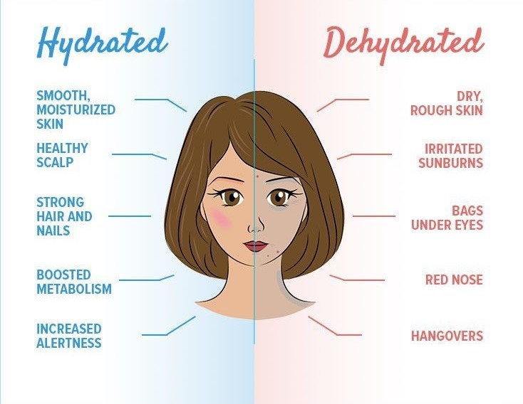

You can be quick to think you're dehydrated when you get a headache (or nausea, dizziness, or mental fuzziness). Not so easy, my friend. While these signs and symptoms may indicate that you aren't having enough water, they may not be the only message the body is trying to send you.
- Dizziness, Confusion, or Headache May Signal Heatstroke or Dehydration
- Dehydration Causes Confusion, but Stroke Can Too
- Concussion and Dehydration Can Cause Serious Headaches
- Menopause Can Cause Symptoms Similar to Dehydration
- Sjogren’s Syndrome Leads to Dryness in Ways That Dehydration Does, As Well
- Like Dehydration, Liver Disease Can Cause Urine Irregularities
- Hypothyroidism Can Cause Constipation, a Common Symptom of Dehydration
Many of the same symptoms of dehydration arise when an individual is experiencing heatstroke. Those overlapping symptoms include dizziness, confusion, and headache. But pay attention to other indicators of heatstroke: a body temperature of at least 104 degrees F, nausea, and a racing heart rate. Dehydration and heatstroke also share some causes, such as hot weather and strenuous activity, and, to add to the confusion, being dehydrated sometimes leads to heatstroke.
Severe dehydration can lead to confusion, but confusion may also be a sign of a stroke. So how can you tell what’s really going on? Look out for symptoms unique to stroke patients. Someone having a stroke may slur his or her words, experience numbness on one side of the body, or have trouble walking. When in doubt, call on a doctor for an expert opinion. “Whenever there’s a change in how a person normally behaves — and this is incredibly important among people who are older — you want to make sure you get that person evaluated so we’re not just writing it off as dehydration and, God forbid, missing something like a stroke.
A concussion is a kind of traumatic brain injury that impairs the ability to think clearly. Headaches and difficulties with attention, memory, posture, and coordination are common side effects.
A knock to the brain is the most common cause of concussions. Concussions can also be caused by violent movement of the head and upper body. Few concussions result in loss of consciousness, but the others do not.
Concussions are most often caused by falls. When you play a contact sport like rugby or soccer, you're likely to sustain a concussion. After a concussion, most patients heal fully.
Menopause is also characterized by signs such as irritability and dryness, similar to dehydration. You'll start to dry out all over if you're losing estrogen. Dehydration can cause skin to become dry and brittle. Menopause may be to blame if you're a woman in her 40s or 50s and find dryness in your vaginal region, as well as irregularities in your cycle.
Experiencing dry mouth, lips, and eyes can be the body’s way of telling you to take in more fluids. Pay special attention to your eyes, though. Cohen says if you notice an uptick in how many eye drops you’re using, it could be Sjogren’s syndrome. This autoimmune disorder usually occurs in women over age 40. Your eyes will likely also burn, itch, or feel like there’s sand in them. Your doctor will likely measure your tear production and check for a damaged cornea, which indicates Sjogren’s syndrome and not dehydration.
If you ask some hydration specialist, they will tell you that the colour of your urine is a good indicator of how hydrated you are. Is it a pale yellow? You're good to go. However, a dark hue could indicate that you need to drink more water. It may also be a sign of a liver condition.
Your urine may be darker than normal if bile is blocked inside or outside the liver, a condition known as cholestasis. Some symptoms that something is wrong with your liver include pale stools or a yellow hue to your face and eyes, which is a disease known as jaundice.
Low thyroid production, often known as hypothyroidism, may cause symptoms such as dry skin and constipation, which may be confused for signs of dehydration, according to Cohen. Fatigue and confusion are two other signs that these diseases share. Though anybody can become dehydrated (though the risk is far greater for young children and the elderly), hypothyroidism is more common in women over 60.
The condition happens when the thyroid gland in the body isn't functioning correctly, and it's something you might have tested out. It can lead to infertility, obesity, and heart disease if left untreated.